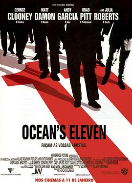

十一罗汉 / Ocean's Eleven
又名：瞒天过海(台) / 盗海豪情(港) / 十一王牌 / 赌场劫案 / 11罗汉 / 盗海11侠 / 江洋大盗
作品信息
| 导演 | 史蒂文·索德伯格 |
| 编剧 | 泰德·格里芬 / 哈利·布朗 / 查尔斯·莱德勒 |
| 主演 | 乔治·克鲁尼 / 布拉德·皮特 / 马特·达蒙 / 朱莉娅·罗伯茨 / 安迪·加西亚 / 卡西·阿弗莱克 / 伯尼·麦克 / 秦少波 / 唐·钱德尔 / 斯科特·凯恩 / 埃利奥特·古尔德 |
| 类型 | 惊悚 / 犯罪 |
| 制片国家/地区 | 美国 |
| 语言 | 英语 / 意大利语 / 粤语 |
| 上映日期 | 2001-12-07(美国) |
| 片长 | 116 分钟 |
| IMDb | tt0240772 |
最后一次看到是 2026-08-12T21:12:05+08:00 · 豆瓣原页